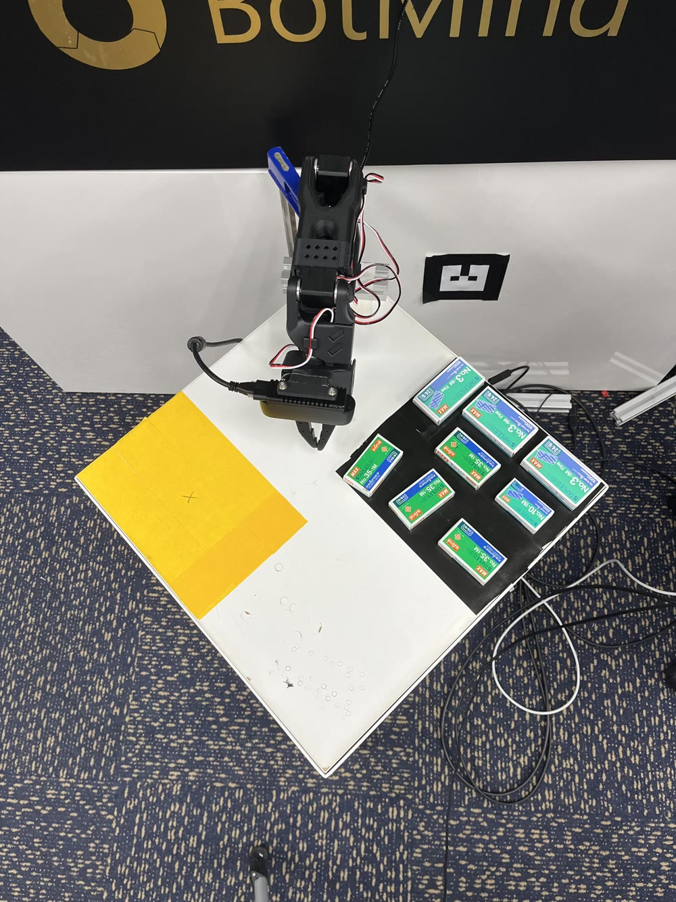
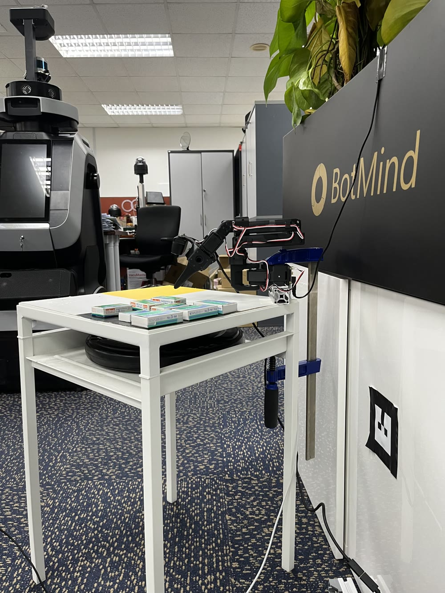
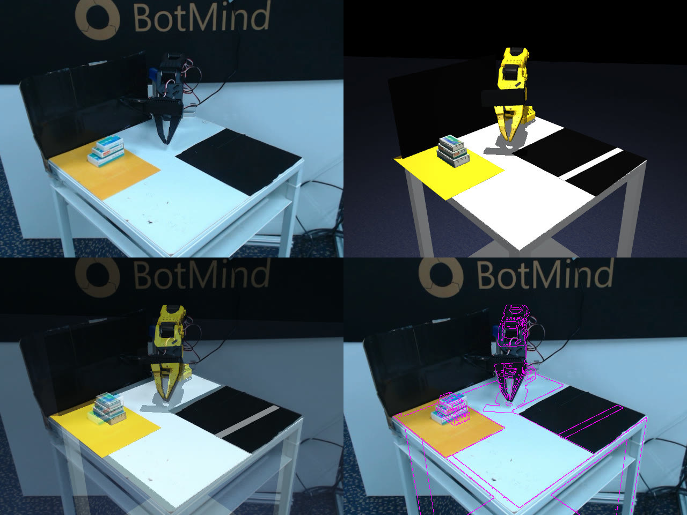
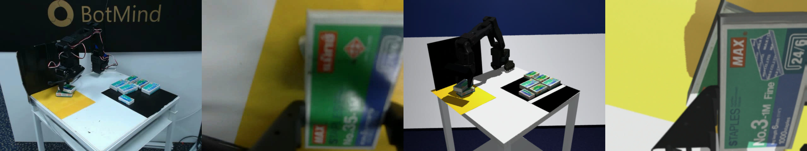
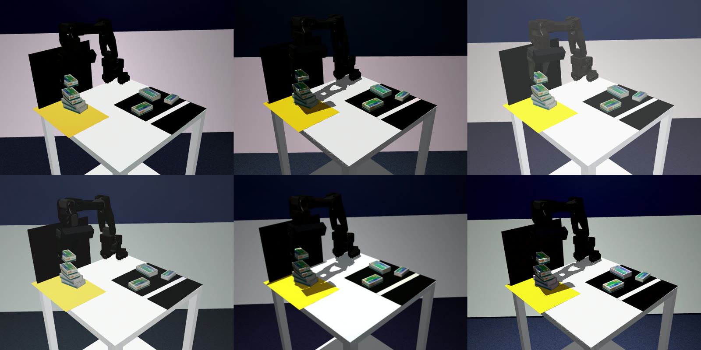
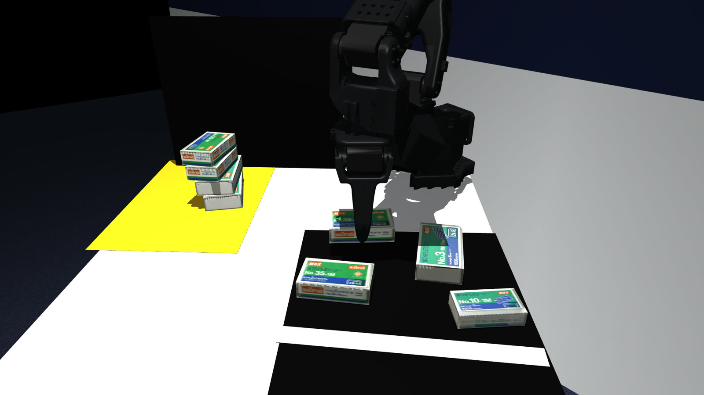
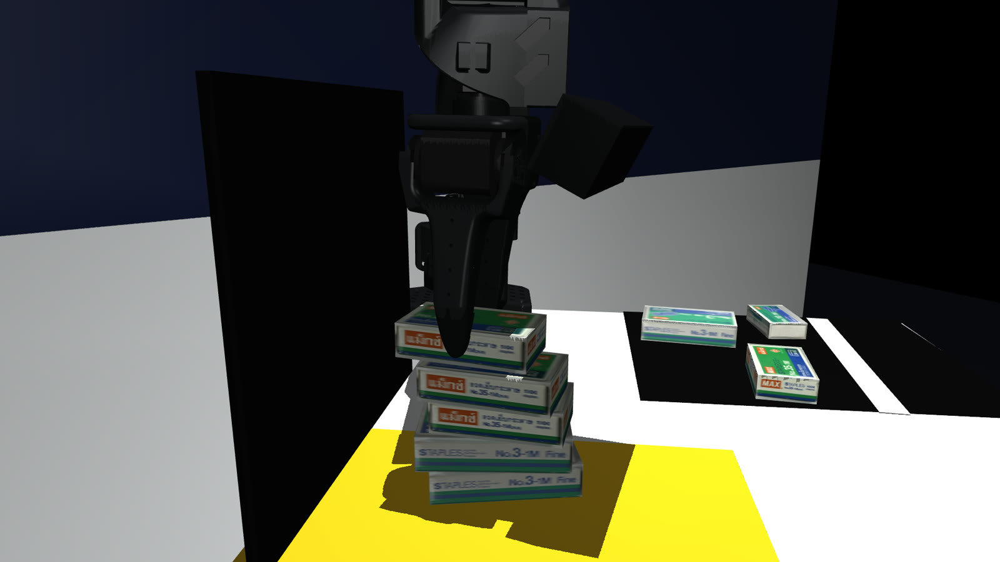
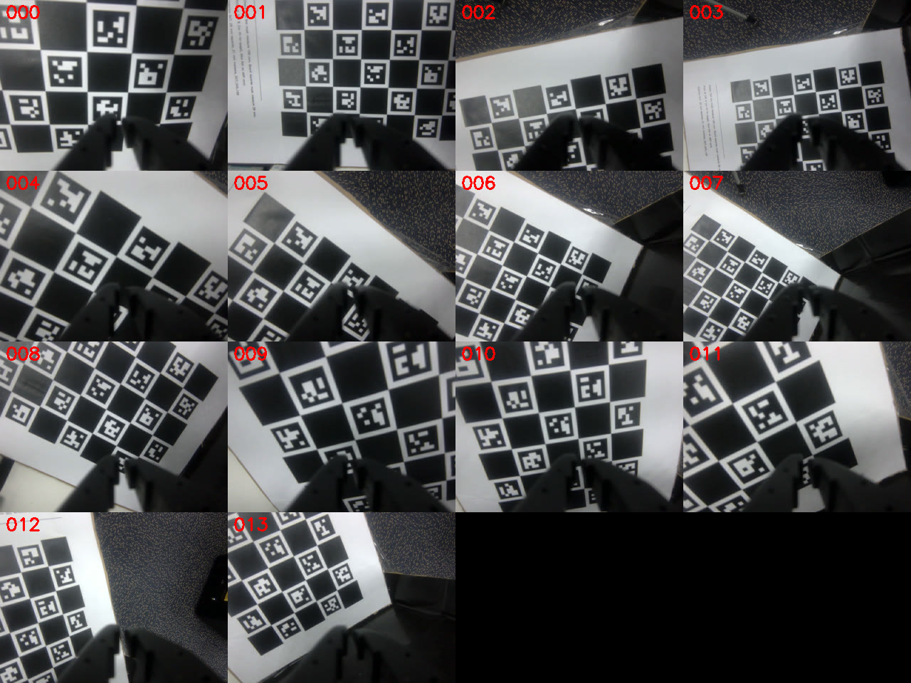
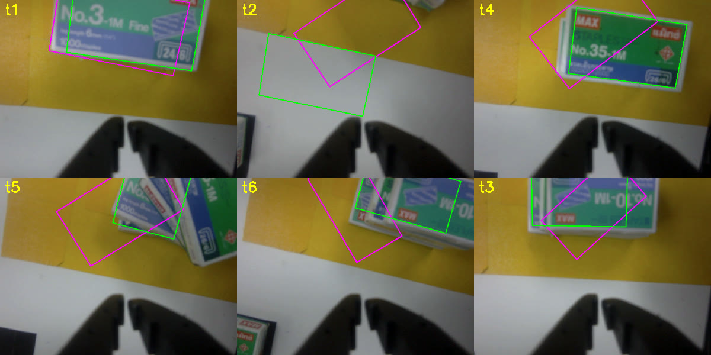
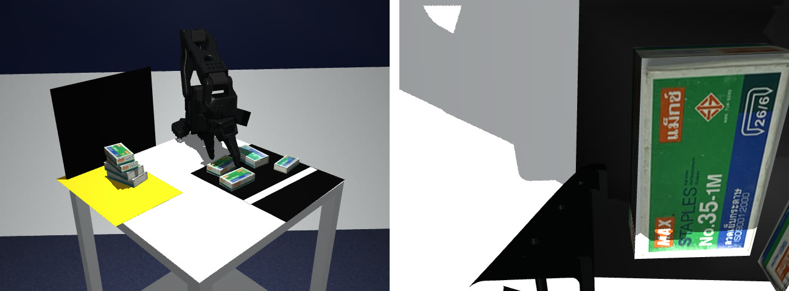

Case study 01 · Personal project · 2026
Human vs Robot Box‑Stacking
A person and an SO-101 arm take turns stacking staple boxes of three sizes. Drop a box or topple the stack and you lose. The rule I set myself was no real demonstrations. Every bit of training data came from a MuJoCo twin of the table, and the real setup was used only to calibrate and to test.
- Role
- Solo, from hardware setup and sim to training, perception and the game
- Timeline
- Oct – Nov 2026
- Stack
- MuJoCo, LeRobot (ACT), PyTorch, OpenCV, Python
- Hardware
- SO-101 arm, 45° front camera, Orbbec wrist camera, trained on an RTX 4070 Ti SUPER
synthetic demonstrations, zero real ones
robot placements that stayed up in real games
turns called right by the referee, 10 sim games
false collapse calls on labelled real trials
Learn one skill, code the rest
Learning a whole game end to end would need far more data than one person can make, and would be impossible to debug. So in simulation the robot learns exactly one physical skill, picking the next box from the supply and putting it gently on the stack. Everything else is ordinary code that I can test.
- Learned in sim. The pick-and-place skill (ACT policy, 30 Hz, two cameras + joint state).
- Classical code. Game rules and turn-taking, a camera referee for drops and collapses, hand detection, e-stop and the UI.
- Mixed box sizes from day one. There are three MAX staple-box types (7.0, 6.0 and 5.2 cm long), so every evaluation is split by box type and by pairing, e.g. a large box onto a small one, the least stable case.


A digital twin worth training in
If the twin is wrong, the policy learns the wrong lesson. Each part of the simulation was checked against a measurement from the real setup before any data was generated.
- Joint mapping. Converted LeRobot’s calibrated degrees to simulator radians and fitted per-joint offsets from gripper-tip touches on table corners. Afterwards the table corners met at 89.8° (90° expected) and the mat sizes matched a ruler.
- Cameras. Fitted the front camera to real frames (2.6 px RMS). The wrist camera was later calibrated with a ChArUco board, after real trials showed a 2 cm release error that came from the camera model (19.7 → 5.1 px).
- Stack physics. Tuned friction and contact settings until sim boxes tipped at the same overhang as real ones, to within 1.5 mm for every pairing.
- Servos. The real STS3215 servos lag and sag, and the default sim servos were 30–75× too stiff. I fitted the sim servo gains to the real arm’s measured response and trained with them.


A scripted expert makes the data
A scripted expert with access to the true state of the simulation generates the demonstrations. It uses inverse kinematics to pick a box and place it on randomised, deliberately crooked stacks.
- Picks by a fixed, visible rule (the reachable box nearest the stack), so ACT never sees two different actions for the same scene.
- Places the new box where its centre of mass is best supported by every level below, not just over the top box. This matters most for a large box onto a small one.
- Slow final descent, release a few millimetres above the top, retract straight up. Release and retract are where stacks fall.
- Recovery data, with DART-style noise injected while recording the clean expert’s actions, plus retry episodes after missed grasps.
- Domain randomisation of lighting, textures (photo textures of the real boxes), camera pose and intrinsics, servo gains, and wall colour.

Training, measured by bucket
I trained ACT policies with LeRobot and scored every version in simulation, split by stack height, crookedness, box type and pairing, so a weak spot couldn’t hide behind a good average.
| Version | What changed | Sim success |
|---|---|---|
| ACT v1 | 2,000 episodes with default settings. 92 of 102 failures were missed grasps | 49% |
| ACT v2 | Fresh 3,000 episodes with a centred grasp, recovery and retry demos, half resolution and 300k steps | 72% (same set) |
| ACT v2 | Starting layouts that follow the game’s rules | 93% |
| ACT v3 | Expert fixed for tall stacks, plus 1,000 targeted episodes | 97% |
All sim targets were met, with ≥ 90% onto stacks of height 0–3 for every box type, ≥ 70% onto crooked stacks of 4+, and 84% for a large box onto a small one against a 70% target. Most targets were also confirmed with 95% confidence bounds on a 1,060-episode evaluation.


Closing the sim-to-real gap
Real trials ran in stages to separate calibration problems from box-size problems, starting with same-type stacks, then mixed pairs, then crooked mixed stacks. Each failure was traced to its cause before anything was retrained.
| Symptom on the real arm | Root cause | Fix |
|---|---|---|
| Carried boxes too low, slow moves | Real servos far softer than sim | Fitted servo model, retrained on 3,009 soft-servo episodes |
| Released 2 cm high and 2–3 cm off | Wrist-camera model fitted from jaw tips only | ChArUco calibration of the wrist camera, new data, fine-tune |
| Hovered 1 cm above the stack | Clutter behind the arm in the front camera | Found by swapping image regions in an open-loop replay, then masked that region |
| Off-centre release on mixed pairs | Policy hovers over the wrong-size box | A hybrid where the policy picks and a model-based place aims at a wrist-camera “look” at the stack |
With those fixes, staged real trials went 12/12 on same-type stacks, 10/10 on mixed pairs and 8/8 on crooked 3–4 box mixed stacks.


A referee you can trust, and a safe arm
A false “you lose” ruins a game, so the referee was built to be conservative and tested against recorded clips before it ever ran live.
- State machine (setup → human turn / robot turn → settle → judge → game over) runs unchanged on the real arm, in MuJoCo, or on recorded video.
- Turn check. It compares before and after frames from the calibrated front camera to see whether the old stack moved, whether the new box sits on the old top, and whether anything landed on the table. It asks the player on screen only when it’s unsure.
- Box identity comes from which supply slot emptied, because the box types differ by only 1–4 px in height in the front view.
- Safety. A hand-detection thread freezes the arm when a hand enters the workspace and resumes 1 s after it leaves. The arm itself is masked out using the twin rendered at the current joint state. An e-stop key cuts torque, and a watchdog stops the game from hanging.
| Collapse judging | False calls | Missed |
|---|---|---|
| First version (cue-based) | 18 / 56 | 11 / 26 |
| Turn check (photometric + box fit) | 0 / 56 | 1 / 26 |
Playing real people
In the first real games the robot placed 8 of 10 boxes and picked the right box every time. Playing real people turned up bugs the trials never did, and each fix was replayed against every recorded turn to confirm it changed nothing else.
- Early key presses ended human turns. Keys are now ignored for 1 s, and a turn with no slot emptied and almost no pixels changed counts as “no move yet”, not a loss.
- The robot modelled the wrong held box after the human took one from the template. The held box is now chosen only among slots the camera still sees as full.
- A 3–4 mm nudge read as a collapse on printed boxes. Each band of the old stack may now shift up to 10 mm before counting as moved. A 2 cm push still loses.
